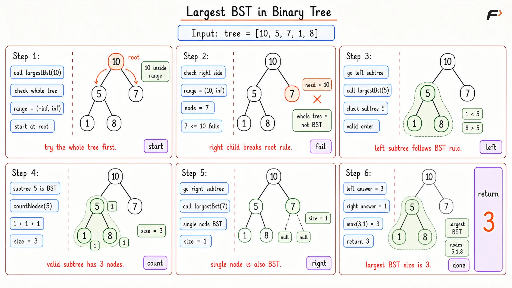
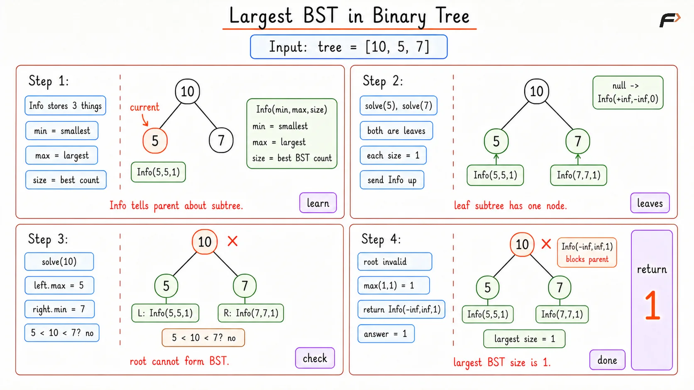

Largest BST in Binary Tree
Given the root of a binary tree, find the size of the largest subtree that is also a Binary Search Tree. The size of a subtree means the number of nodes in that subtree.
A subtree is a BST if:
Every value in the left subtree is smaller than the root value.
Every value in the right subtree is greater than the root value.
The left and right subtrees are also BSTs.
Example 1
Input: root = [2, 1, 3]
Output: 3
Explanation: The given complete binary tree is a BST consisting of 3 nodes.
Example 2
Input: root = [10, null, 20, null, 30, null, 40, null, 50]
Output: 5
Explanation: If we consider node 10 as the root, it forms the largest BST in the tree, with a size of 5.
Brute Force Approach
The most direct thought is: check every subtree one by one.
For any node, treat that node as the root of a subtree. If that whole subtree is a valid BST, count its nodes and consider it as an answer. If it is not a BST, move to its left and right children and repeat the same check there.
This works because the answer must be rooted at some node in the tree. The only problem is that the same nodes may be checked again and again while validating different subtrees.
Algorithm
For every node, first check whether the subtree rooted at that node is a valid BST. This is done using lower and upper bounds, because every node must fit inside the range decided by its ancestors.
If the subtree is valid, count all nodes in that subtree. This gives the size of one possible BST answer.
If the subtree is not valid, recursively find the largest BST in the left subtree and in the right subtree. This is needed because the current root cannot be used, but a valid BST may still exist below it.
Return the larger value from the left and right side.
Dry Run

Largest BST in Binary Tree Brute Dry Run
Solution
#include <bits/stdc++.h>
using namespace std;
class Node {
public:
int data;
Node* left;
Node* right;
Node(int value) {
data = value;
left = nullptr;
right = nullptr;
}
};
class Solution {
/*
Checks whether the current subtree follows
the BST rule inside the allowed value range.
*/
bool isValidBST(Node* root, long long low, long long high) {
// An empty subtree is always valid.
if (root == nullptr) {
return true;
}
// The current value must stay inside its valid BST range.
if (root->data <= low || root->data >= high) {
return false;
}
// The left and right subtrees get stricter ranges.
return isValidBST(root->left, low, root->data) &&
isValidBST(root->right, root->data, high);
}
/*
Counts all nodes in the current subtree.
*/
int countNodes(Node* root) {
// Empty subtree contributes zero nodes.
if (root == nullptr) {
return 0;
}
return 1 + countNodes(root->left) + countNodes(root->right);
}
public:
/*
Returns the size of the largest subtree
that satisfies the BST property.
*/
int largestBst(Node* root) {
// Empty tree has no BST nodes.
if (root == nullptr) {
return 0;
}
// If the whole current subtree is BST, its full size is the answer here.
if (isValidBST(root, LLONG_MIN, LLONG_MAX)) {
return countNodes(root);
}
// Otherwise, the answer must be fully inside one child subtree.
return max(largestBst(root->left), largestBst(root->right));
}
};
// Driver code starts
int main() {
Node* root = new Node(10);
root->left = new Node(5);
root->right = new Node(15);
root->left->left = new Node(1);
root->left->right = new Node(8);
root->right->right = new Node(7);
Solution sol;
cout << sol.largestBst(root) << endl;
return 0;
}Complexity Analysis
Time Complexity: O(N2) in the worst case, N is the number of nodes in the tree, because validating subtrees can repeatedly visit the same nodes.
Space Complexity: O(H), where H is the height of the tree, because recursion uses the call stack. In the worst case, this becomes O(N).
Optimal Approach
The brute force method keeps asking the same question again: “Is this subtree a BST?” A better way is to make every subtree answer that question only once. For each node, the parent needs three useful facts from its left and right children:
What is the minimum value in that subtree?
What is the maximum value in that subtree?
What is the largest BST size found there?
This naturally suggests postorder traversal, because children must be solved before the parent. At a node, the current subtree becomes a BST only if: left maximum < current value < right minimum
If this condition is true, both child BSTs can join with the current node. If it is false, the current subtree cannot be a BST, but the largest BST may still be inside the left or right child.
Algorithm
For a null node, return a valid empty subtree with size
0, minimum as positive infinity, and maximum as negative infinity. This makes leaf-node comparisons work naturally.Recursively solve the left and right children first. This is done because the current node needs child minimums, maximums, and sizes before it can decide anything.
If the left maximum is smaller than the current value and the current value is smaller than the right minimum, the current subtree is a valid BST. Return its updated minimum, maximum, and total size.
If the condition fails, return an invalid range. This prevents the parent from wrongly using this subtree as part of a larger BST.
Even when the current subtree is invalid, keep the best size from the left and right side, because the answer may already exist below the current node.
Dry Run

Largest BST in Binary Tree Optimal Dry Run
Solution
#include <bits/stdc++.h>
using namespace std;
class Node {
public:
int data;
Node* left;
Node* right;
Node(int value) {
data = value;
left = nullptr;
right = nullptr;
}
};
class Info {
public:
long long minValue;
long long maxValue;
int size;
Info(long long minValue, long long maxValue, int size) {
this->minValue = minValue;
this->maxValue = maxValue;
this->size = size;
}
};
class Solution {
/*
Returns subtree boundaries and the largest BST size
found inside the current subtree.
*/
Info solve(Node* root) {
// Empty subtree is valid and should not block leaf comparisons.
if (root == nullptr) {
return Info(LLONG_MAX, LLONG_MIN, 0);
}
// Left information is needed before checking the current root.
Info leftInfo = solve(root->left);
// Right information is needed before checking the current root.
Info rightInfo = solve(root->right);
// The current root can join both children only if BST bounds fit.
if (leftInfo.maxValue < root->data && root->data < rightInfo.minValue) {
// The new BST size includes left, right, and the current node.
int currentSize = leftInfo.size + rightInfo.size + 1;
// These boundaries describe the full valid BST rooted here.
long long currentMin = min(leftInfo.minValue, (long long)root->data);
long long currentMax = max(rightInfo.maxValue, (long long)root->data);
return Info(currentMin, currentMax, currentSize);
}
// Invalid boundaries stop the parent from using this subtree as BST.
return Info(LLONG_MIN, LLONG_MAX, max(leftInfo.size, rightInfo.size));
}
public:
/*
Returns the size of the largest subtree
that satisfies the BST property.
*/
int largestBst(Node* root) {
// The helper stores the final answer in its size field.
return solve(root).size;
}
};
// Driver code starts
int main() {
Node* root = new Node(10);
root->left = new Node(5);
root->right = new Node(15);
root->left->left = new Node(1);
root->left->right = new Node(8);
root->right->right = new Node(7);
Solution sol;
cout << sol.largestBst(root) << endl;
return 0;
}Complexity Analysis
Time Complexity: O(N), N is the number of nodes, because each node is visited once.
Space Complexity: O(H), where H is the height of the tree, because of recursion stack space. In the worst case, this becomes O(N).
Interview follow-up Questions
Postorder traversal solves the left and right children before the current node. That is exactly what is needed here, because the current node can decide whether it forms a BST only after knowing the minimum, maximum, and size information from both children.